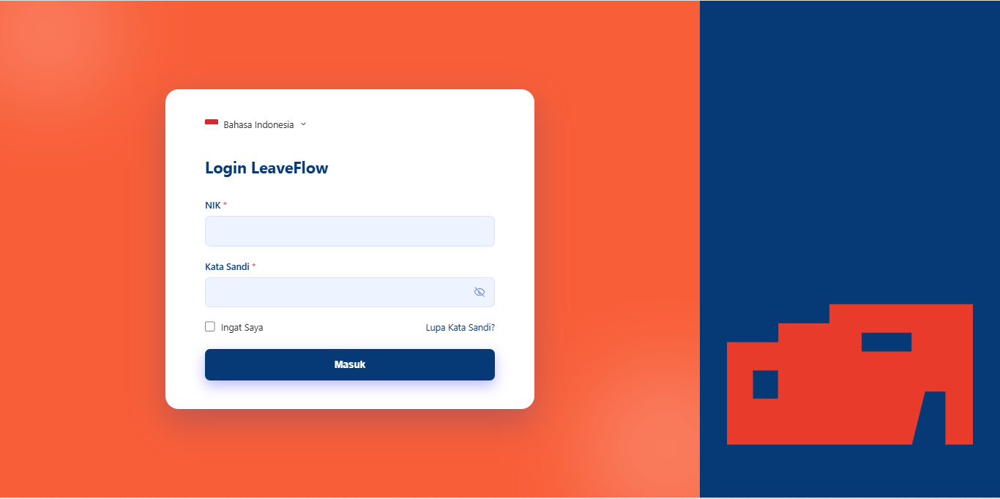

Website Portofolio Sederhana
Proyek ini dibuat untuk tugas sekolah berupa website portofolio sederhana.

🎓 Siswa Rekayasa Perangkat Lunak
Fokus pada pengembangan web dan perancangan antarmuka pengguna, dengan minat besar mempelajari teknologi baru secara berkelanjutan.
Nama saya Safira Galuh Santoso, siswa jurusan Rekayasa Perangkat Lunak (RPL). Saya memiliki ketertarikan besar pada bidang Web Development dan UI/UX Design.
Bagi saya, dunia teknologi adalah sesuatu yang dinamis dan penuh tantangan. Saya senang mempelajari hal baru, terutama membuat situs web yang tidak hanya berfungsi dengan baik, tetapi juga memiliki tampilan yang menarik.
Dalam proses belajar dan pengembangan proyek, saya terbiasa menggunakan Visual Studio Code, Figma, dan Laragon. Ke depan, saya berharap dapat terus mengembangkan keterampilan dan berkontribusi di dunia teknologi.
 Laragon
Laragon
Beberapa tools dan kemampuan yang saya kuasai selama belajar di jurusan RPL.
Proyek ini dibuat untuk tugas sekolah berupa website portofolio sederhana.

Proyek ini dibuat untuk tugas sekolah berupa portofolio sederhana menggunakan WordPress.

Dibuat saat PKL di Perpustakaan Jakarta dan Pusat Dokumentasi Sastra H.B. Jassin, berupa sistem pengajuan cuti pegawai berbasis web.
Rekayasa Perangkat Lunak (RPL)
Saat ini saya sedang menempuh pendidikan di SMK Negeri 40 Jakarta pada jurusan Rekayasa Perangkat Lunak. Selama belajar di sini, saya mendapatkan banyak ilmu seputar pemrograman, pengembangan website, aplikasi berbasis desktop, dan konsep sistem basis data.
Selain pembelajaran teori, saya juga mengikuti berbagai praktik langsung, seperti membuat aplikasi CRUD sederhana, membangun website portofolio pribadi, hingga proyek kelompok yang melatih kerja sama tim. Saya terbiasa menggunakan Visual Studio Code, Figma, dan Laragon untuk mendukung proses belajar.
Ingin bekerja sama? Silakan hubungi saya melalui formulir atau media sosial berikut.
Emailgaluhsg09@gmail.com
WhatsApp+62 857-7525-7579
LinkedInlinkedin.com
GitHubgithub.com/galuhsg09
Instagram@kidzz.gal